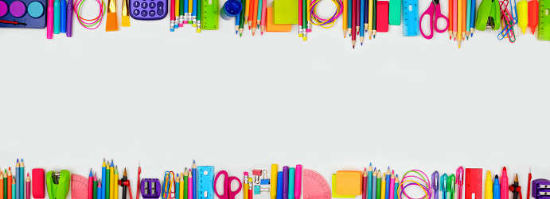

Educacíon infantil
Etapa en la cual generalmente se comprenden desde los 0 a los 6 años de edad.
La Educacion Es importante.
la educación es fundamental para el desarrollo humano y social, ya que permite a las personas alcanzar su máximo potencial y contribuir al bienestar de la sociedad en la que viven.

Como se debe llevar a cabo
la educación debe ser un proceso dinámico y contextualizado, centrado en el estudiante y enfocado en el aprendizaje significativo, que fomente la flexibilidad, la participación activa y la formación integral de las personas.